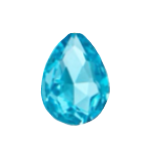
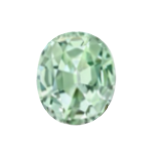
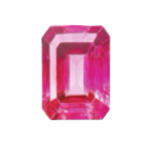
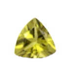
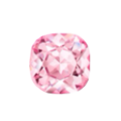

Common marketplace model
Finished wholesale product
Repeated catalogue styles
Generic descriptions
Supplier-led imagery
Product design · E-commerce
I created Chloris Lux from the ground up—from positioning and product architecture to multilingual commerce, packaging and fulfilment.
Context
The crystal-jewelry market is filled with products that often look interchangeable. Many brands rely on generic spiritual language, inconsistent visual presentation, or unverified promises about what crystals can achieve.
The opportunity was not to compete through the largest product selection or the strongest spiritual claims. It was to create a more balanced space between expressive crystal jewelry, personal symbolism, and contemporary visual design.
Pair contemporary design with personal meaning and practical clarity.
How might a small crystal-jewelry brand combine personal meaning with a contemporary, grounded and trustworthy experience?
During my category review, I found limited examples in Europe combining contemporary presentation, grounded product information and personally designed crystal jewelry. I created each composition and beaded every bracelet myself, giving each piece an individual name and story.
Finished wholesale product
Repeated catalogue styles
Generic descriptions
Supplier-led imagery
Founder-designed composition
One-of-a-kind pieces
Individual names and stories
Brand-directed photography
Brand
For design-conscious customers seeking jewelry with personal significance, Chloris Lux creates one-of-a-kind crystal bracelets that connect visual composition with symbolic storytelling.
Every bracelet should feel intentionally composed—not assembled from interchangeable stones.
Stories help customers connect with products, but the language remains personal and interpretive.
The brand avoids medical promises and presents crystal meanings as cultural, symbolic or personal associations.
Materials, dimensions, sizing, shipping and care should be easy to understand.
A customer may not know the name of a crystal, but they often know the feeling or moment they are shopping for. “Shop by intention” provides an entery point for primary intention navigation.
Intention-led browsing supports the brand, while crystal type, color, price and materials remain useful secondary catalogue refinement.
An unfamiliar brand has to communicate not only emotional connection, but also practical evaluation.
Layer one - Emotional invitation
1 Name, 2 story, 3 styled product photography, and 4 complementary pairings
Creates emotional connection, inspires styling possibilities, and sparks purchase interest.
Layer two - Purchase confidence
5 Materials, 6 bead size, 7 color mood, 8 symbolism, 9 wrist fit, and 10 true-to-product imagery
Supports practical evaluation and reduces uncertainty before purchase.
Experience
The journey follows the customer from first discovery to an ongoing relationship—using emotional storytelling to invite exploration, practical information to support evaluation and purchase, and thoughtful service to continue the connection after delivery.





System
With the brand identity and core experience established, I reviewed how consistently they could be delivered as the catalogue and business grew—across products, channels, languages, packaging and fulfilment. This revealed the next challenge: translating a distinctive brand direction into a practical, scalable and maintainable system for a founder-run business.
Challenge
Chloris Lux serves multilingual local and international audiences, but translating and maintaining every relevant language at launch was not realistic within the available timeline and resources.
Scalable MVP solution
I prioritized French for local commerce, English for international reach and German for local and neighbouring-market accessibility. These languages were habitually used by 50.8%, 25.7% and 22.5% of census respondents respectively. Core content was structured as reusable, translation-ready modules—reducing the initial scope without limiting future expansion.
Trade-off and mitigation
Luxembourgish had the highest habitual use but was not included in the initial release. The modular system preserves it as a priority for future expansion, allowing Luxembourgish and other languages to be added without redesigning the website while leaving time for culturally appropriate, high-quality translation.
Source: STATEC, Luxembourg 2021 population census. Languages habitually used at home, work or school; multiple answers were possible.
Challenge
Carrier coverage and varying shipping costs limited the destinations Chloris Lux could serve at launch. Shipping outside the EU introduced additional customs requirements, potential duties and operational complexity.
Scalable MVP solution
1 Early destination validation: Make supported shipping destinations discoverable through the country selector, helping customers identify delivery eligibility before investing time in shopping.
2 Shipping coverage transparency: Provide an explicit list of supported countries to set clear expectations and reduce uncertainty around delivery availability.
3 Preserve customer relationships: Acknowledge current shipping limitations and communicate ongoing expansion efforts to maintain goodwill with customers in unsupported markets.
4 Free shipping incentive: Offer free shipping on orders over €100 across supported destinations to reduce shipping-related purchase friction and encourage higher order values.
5 Transparent, tiered shipping rates: Group countries into four shipping price tiers (€5, €10, €15 and €20), balancing carrier costs with pricing predictability and operational simplicity.
6 Customs and duties transparency: Clarify customers’ responsibility for applicable import duties and taxes outside the EU to prevent unexpected charges and reduce potential disputes.
Trade-off and mitigation
Limiting shipping coverage and grouping destinations into pricing tiers simplifies fulfilment and pricing management at launch, but limits access to potential international customers.
Transparent service information and empathetic communication help mitigate customer frustration. As a future improvement, capturing interest from unsupported regions would provide evidence to prioritize shipping expansion based on customer demand.
Challenge
Chloris Lux needed to serve customers across Europe, where delivery rules, shipping prices, currencies, languages and duties can vary by market. Creating a fully localized setup for each country from the start would have added significant operational complexity and maintenance overhead.
Scalable MVP solution
As shown in 1, I structured the market system in layers so the setup could stay manageable in the MVP while remaining scalable later. 2 Europe works as the parent market, carrying shared attributes such as the Euro currency, storefront languages, and future regional logic such as duties.
Within that structure, 3 Luxembourg, Europe Zone 1, Zone 2 and Zone 3 act as child markets. They inherit the shared settings from Europe rather than duplicating them, which keeps the system more maintainable and easier to roll out.
For the MVP, the main variable that needed customization was 4 shipping. Each zone keeps the inherited regional setup but overrides shipping rates based on delivery needs. At the same time, shared attributes such as 5 currency and language configuration remain inherited from the parent market, reducing duplication and keeping the market logic clear.
This system is also designed to scale at the country level. 6 The U.K. shows how an individual market can later customize its own currency, language and shipping, and potentially duties as well. Once the underlying structure is in place, additional country-level markets — or groups of countries sharing similar requirements — can be rolled out with much less rework.
Trade-off and mitigation
Prioritizing shipping differences in the MVP kept the market setup manageable, but meant other dimensions of localization, such as country-specific currency, language and duties, were not fully customized at launch. The layered market structure mitigates this by allowing Chloris Lux to start with shared regional logic now and expand toward more precise market-level experiences over time.
Impact
The project made prioritization tangible: an expressive idea only creates value when it remains understandable, maintainable and operationally realistic.
Commercial impact is not presented as fact. The next phase establishes a baseline and tests the decisions that matter most.